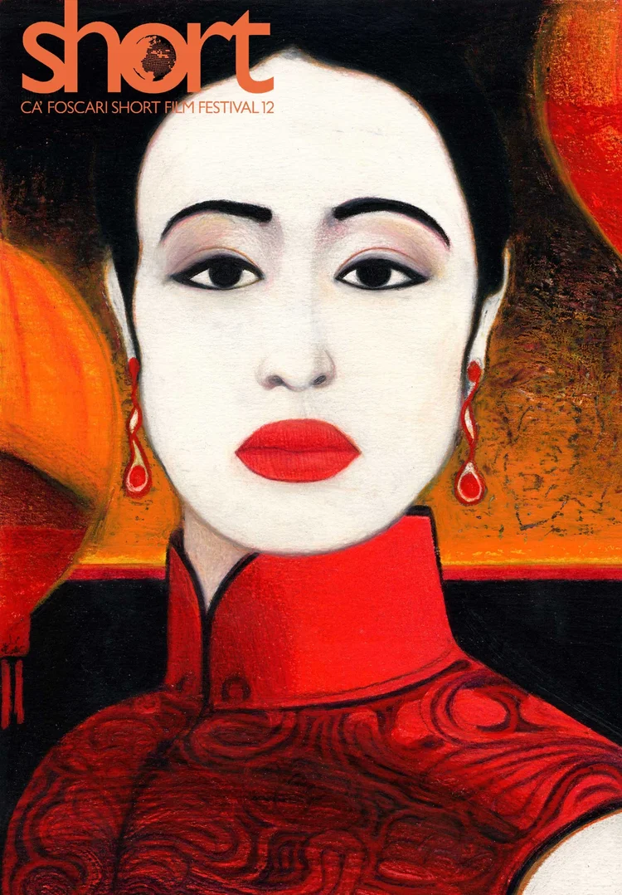

Social & editoria
Ca’ Foscari Short Film Festival
Durante la mia esperienza al Ca' Foscari Short Film Festival, ho collaborato attivamente con il team Social Media & Comunicazione e con il team Redazione e Design del Catalogo.
Per la parte social, mi sono occupata della creazione e pubblicazione di diversi post su Instagram, utilizzando hashtag per aggiornare il pubblico sugli ospiti e sui film in programma.
Per quanto riguarda il catalogo, ho redatto le sinossi di alcuni cortometraggi e curato la loro impaginazione: un'opportunità che mi ha permesso di applicare per la prima volta Adobe InDesign in un contesto professionale e di lavoro di squadra.
Qui trovate alcuni esempi dei contenuti social realizzati, mentre il catalogo completo sfogliabile lo trovate cliccando sull’immagine qui sotto.
